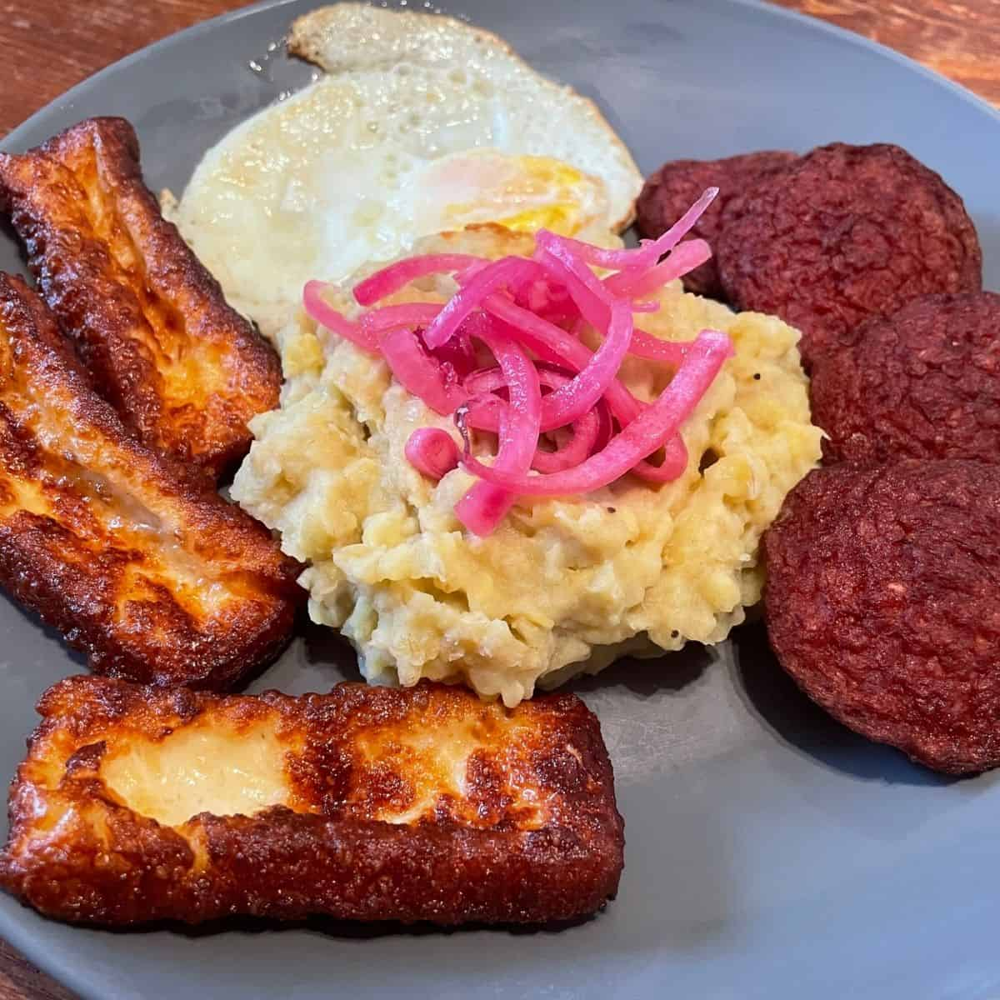

Home
Mangu Recipe

Mangu is a traditional Dominican Republic dish made from boiled and mashed green plantains, often served as a staple breakfast item. The plantains are boiled until soft, then mashed with butter or oil and a bit of the cooking water to create a smooth, creamy texture. Mangu is typically accompanied by "los tres golpes" (the three hits), which include fried cheese, fried salami, and fried eggs.
Ingredients
- 3 green plantains
- 1 quart water
- 1/4 cup olive oil
- 1 cup sliced red onion
- 1 1/2 tablespoons salt
- 2 eggs
- 2 slices of salami
- fried cheese
Steps
- Place the plantains and water in a saucepan. Bring to a boil, and cook 20 minutes, until plantains are tender but slightly firm. Drain, reserving 1 cup of the liquid. Cool plantains, and peel.
- Heat the olive oil in a skillet over medium heat, and saute the onion until tender.
- In a bowl, mash the plantains with the reserved liquid and salt. Transfer to a food processor, mix in the peppers, and puree. Serve the pureed plantain mixture topped with the onions.